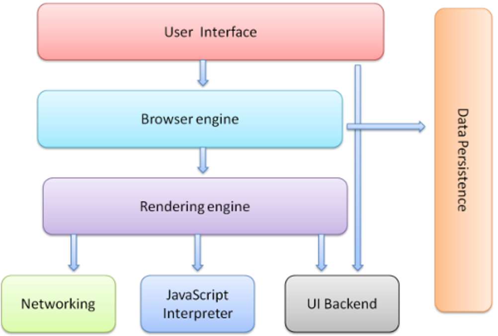
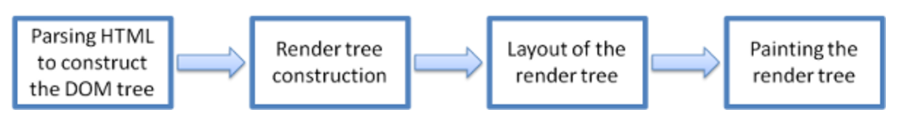
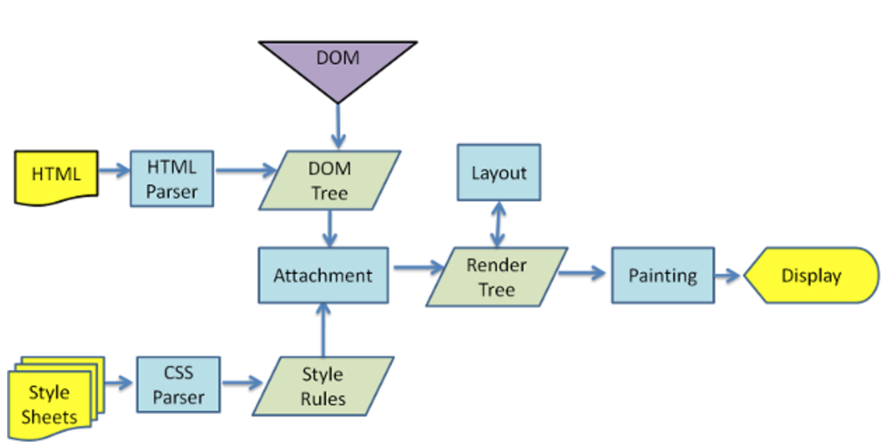
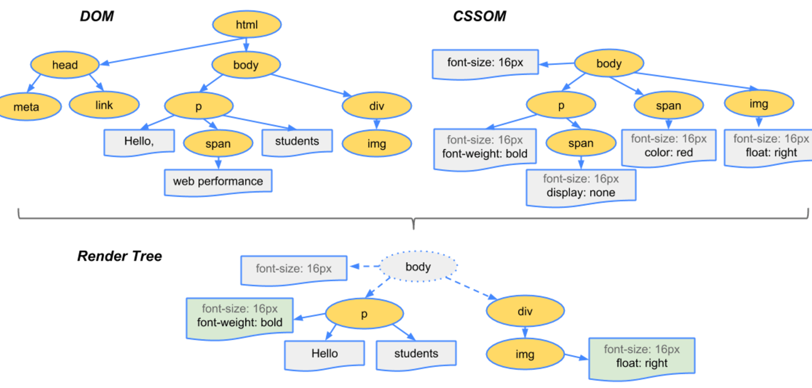

浏览器工作原理篇
2017-06-13 星期二 丁酉年 五月十九
【鸡年】丙午月 辛未日
宜：嫁娶 祭祀 祈福 求嗣 开光
忌：安葬 开生坟 合寿木 行丧
浏览器到底干了啥？chrome为例

用户接口：包括地址栏，前进后退，书签菜单等窗口上除了网页显示区域以外的部分。
浏览器引擎：查询与操作渲染引擎的接口。
渲染引擎：解析HTML和CSS并将结果显示到窗口。
网络：用于网络请求。
UI后端：绘制基础元件，如组合框与窗口。
JavaScript解释器：解释执行js。
数据存储：把需要的数据写到硬盘，持久层。H5规定了web 。database
chrome使用多个渲染引擎实例，每个Tab一个，每个Tab都是一个独立进程。
渲染机制
主要:

构建DOM和CSSOM：（Bytes → characters → tokens → nodes → object model）
构建render tree：（非可视化和display:none的DOM元素不会出现在渲染树中）
render tree布局
render tree绘制
Reflow:重新计算样式和渲染树
Repaint:采用新样式绘制元素
webkit为例:

详细过程:
1.Create/Update DOM And request css/image/js
浏览器请求到HTML后，开始解析HTML，生成DOM，同时会并行发起对资源文件的请求（可能存在某种匹配机制）
2.Create/Update Render CSSOM
CSS文件下载完后开始构建CSSOM
3.Create/Update Render Tree
CSSOM生成以后与DOM一起生成Render Tree

4.Layout/Reflow
根据渲染树计算各个节点的位置，完成布局
5.Painting/Repaint
按照布局完成页面绘制
tips
DomContentLoad和load事件触发时间不同，前者是DOM构建完毕，后者在所有资源下载完以后触发。
Q&A
Q: 页面渲染出来了指的是什么？
A: 无图片首屏，有图片首屏，完整加载。
Q: script标签对首屏影响？
A: 如果script不在首屏范围内，不影响首屏时间，但有可能截断首屏的内容。
Q: script放body底部以及async、defer属性的好处？
A: 放底部可以防止首屏内容被截断；浏览器并行下载资源有限制，为减少tcp占用，使用async或defer。defer是在页面加载完后执行这部分js，async则是异步执行，不阻塞页面任务。

微信打賞

支付寶打賞